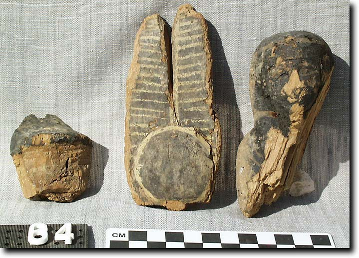
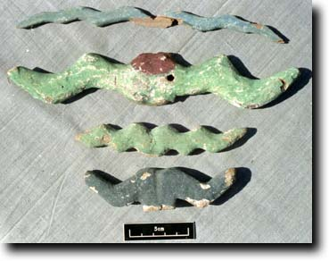

- Home
- Finds home
- Finds by date
- Finds by type
- Conservation
- Slideshow
- Site general
Ptah-Sokar-Osiris figures
|
The Ptah-Sokar-Osiris figure appears at the end of the New Kingdom, and is a very common feature of burials through to the roman period. A wooden mummiform figure stands on a wooden base, usually with a plumed crown and a horizontal pair of idealised ram's horns. On the wooden base a small wooden falcon usually sits looking at the figure. Much to our surprise, we found an almost complete figure (uninscribed), as well as a number of fragments of other figures. The complete figure is shown at right (excavation number 99.94.0001). Assuming the usual one figure per burial, the number of fragments may help to quantify the number of original interments. My latest guess is that they indicate the existence of six or seven figures. |
|
|
This Ptah-Sokar-Osiris is now in the Cairo Museum, as part of the 'Hidden Treasures' exhibition which opened in December 2002 to celebrate the Museum's centenary. The latest news we have is that the exhibition is to be permanent. It is accessed from an entrance at the west side of the Museum. We discovered in December 2003 that the statuette has been given a Journal d'Entrée number in the Cairo Museum, and so is now officially part of the collection. It is JE 99151. |
|
 |
|
Parts of a black Ptah-Sokar-Osiris figure from shaft G in courtyard (99.98.0279) |
|
Feathers from Ptah-Sokar-Osiris figures |
Feathers from a black Ptah-Sokar-Osiris figure |
 |
|
Hawks from bases of Ptah-Sokar-Osiris figures |
Horns from the crowns of Ptah-Sokar-Osiris figures |
|
There is also another example almost certainly from this tomb, now in a museum. The Egyptian Museum in Turin has a figure of the Fourth Priest of Amun Wedjahor (C2470), whom I show elsewhere to have been buried in this tomb. It seems likely that this object was removed from the tomb when it was robbed prior to being gated up. It bears the following hieroglyphs:
The fourth priest of Amun-Re, king of the gods, the governor of the town, the scribe of the domain of Amun, the priest of Osiris lord of Busiris. The text is taken from F. Payraudeau, Revue d'Egyptologie 54 (2003), 142 |
|
© Nigel Strudwick 1997-2016